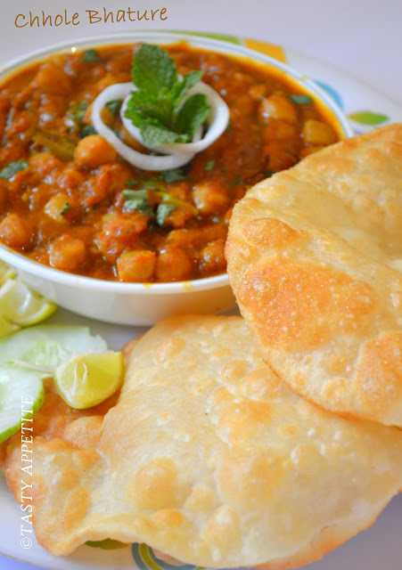

Chole Bhature

DESCRIPTION:
Chole Bhature is a popular North Indian dish consisting of a spicy chickpea curry (Chole) served with deep-fried, puffed bread (Bhature). It's a hearty and flavorful meal, often enjoyed for breakfast or lunch. The dish is known for its contrasting textures and the rich, tangy taste of the chole.
Chole (Chickpea Curry): The chole is a flavorful and spicy curry made with chickpeas (chana) as the base. It's typically cooked with a blend of aromatic Indian spices like turmeric, chili powder, coriander, and garam masala, creating a tangy and savory gravy. The chole is often garnished with chopped onions, green chilies, and cilantro.
Bhature (Fried Bread): Bhature is a leavened, deep-fried bread made from maida (refined wheat flour). It's characterized by its puffy, golden-brown appearance and soft, slightly chewy texture when freshly fried. The dough for bhature is typically made with maida, yogurt, and a touch of sugar, then left to rise before being rolled out and fried.
INGREDIENTS:
Ingredients for Bhatura:
- 2 cup maida
- 2 tbsp rava / semolina, fine
- 1 tsp sugar
- ¼ tsp baking soda
- 1 tsp sugar
- ½ tsp salt
- 2 tbsp oil
- ¼ cup curd
- water, for kneading
- oil, for frying
Ingredients for Pressure Cooking Chole:
- 1 cup chana / chickpea, soaked overnight
- 2 tea bags
- ¼ tsp baking soda
- 1 tsp salt
- 3 cup water
Ingredients for Chole Preparation:
- 2 tbsp oil
- 1 bay leaf
- 1 black cardamom
- 2 pod cardamom
- 1 inch cinammon
- 1 tsp cumin/jeera
- ½ tsp kasuri methi
- 1 onion, finely chopped
- 1 tsp ginger garlic paste
- ¼ tsp turmeric
- 1 tsp chilli powder
- 1 tsp coriander powde
- ½ tsp cumin powder
- ½ tsp garam masala
- 1 tsp aamchur
- ¼ tsp salt
- 1½ cup tomato puree
- 2 tbsp coriander, finely chopped
Ingredients for Tempering:
- 1 tbsp ghee / clarified butter
- 2 chilli, slit
- ¼ tsp turmeric
- ¼ tsp chilli powder
- ¼ tsp garam masala
STEPS:
How to make bhatura recipe:
- Firstly, in a large bowl take 2 cup maida, 2 tbsp rava, 1 tsp sugar, ¼ tsp baking soda, 1 tsp sugar, ½ tsp salt and 2 tbsp oil. mix well.
- Now add ¼ cup curd and mix well making sure everything is well combined.
- Further, add water as required and knead the dough.
- Knead to the smooth and soft dough without putting much pressure.
- Grease the dough with oil, cover and rest for 2 hours
- After 2 hours, knead the dough slightly.
- Pinch a ball sized dough and make a ball without andy cracks.
- Roll slightly thick, applying oil to prevent from sticking.
- Drop the rolled dough into the hot oil.
- Press until the bhature puffs up and splash oil to puff up fully.
- Flip over and fry until it turns golden brown.
- Finally, drain off the bhatura and is ready to enjoy with chole masala.
How to make chole recipe for batura:
- Firstly, in a pressure cooker take soaked chana. i have soaked 1 cup chana in enough water for 8 hours.
- Add 2 tea bags, ¼ tsp baking soda, 1 tsp salt and 3 cup water.
- Cover and pressure cook for 5 whistles. if you do not have tea bags, then you can prepare tea decoction and add to cooker.
- Once the pressure releases, open the cooker and discard the tea bags. keep aside.
- In a large kadai, heat 2 tbsp oil, 1 bay leaf, 1 black cardamom, 2 pod cardamom, 1 inch cinnamon, 1 tsp cumin, ½ tsp kasuri methi. saute on low flame until the spices turn aroamtic.
- Now add 1 onion, 1 tsp ginger garlic paste and saute until onions turn golden brown.
- Add ¼ tsp turmeric, 1 tsp chilli powder, 1 tsp coriander powder, ½ tsp cumin powder, ½ tsp garam masala, 1 tsp aamchur and ¼ tsp salt.
- Saute on low flame until the spices turn aromatic.
- Further add 1½ cup tomato puree and saute until the oil separates. to prepare tomato puree, i have blended 2½ ripened tomatoes in blender without adding water.
- Now add boiled chole and mix well. adjust consistency by adding water if required.
- Cover and simmer for 10 minutes, or until chole absorbs all the flavour.
- To prepare the tempering, heat 1 tbsp ghee in a pan.
- Add 2 chilli, ¼ tsp turmeri, ¼ tsp chilli powder and ¼ tsp garam masala.
- Saute on low flame without burning the spices.
- Pour the tempering over the chole masala, add 2 tbsp coriander and mix well.
- Finally, chole bhature is ready to enjoy with some onions.
←Back to Home